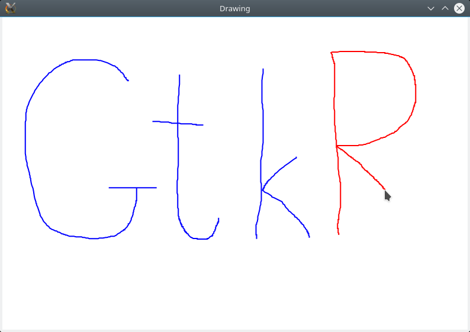

A simple drawing program
Aside from widgets, GtkObservables also adds canvas interactions, specifically handling of mouse clicks and scroll events. We can explore some of these tools by building a simple program for drawing lines.
Let's begin by creating a window with a canvas in it:
using GtkObservables, Colors
using GtkObservables.Gtk4
win = GtkWindow("Drawing")
c = canvas(UserUnit) # create a canvas with user-specified coordinates
push!(win, c)A few concepts from Cairo are important here:
- all drawing occurs on a
canvasobject, which corresponds to a region of a window - Cairo canvases can use two different coordinate systems: screen pixels, often called
DeviceUnit, and a user-specified custom coordinate system, calledUserUnit.
Here we specified UserUnit units for our drawing and mouse-position units; we chose these to be (0,0) for the top left and (1,1) for the bottom right. With this choice, if a user resizes the window by dragging its border, our lines will stay in the same relative position.
We're going to set this up so that a new line is started when the user clicks with the left mouse button; when the user releases the mouse button, the line is finished and added to a list of previously-drawn lines. Consequently, we need a place to store user data. We'll use Observables, so that our Canvas will be notified when there is new material to draw:
const lines = Observable([]) # the list of lines that we'll draw
const newline = Observable([]) # the in-progress line (will be added to list above)Now, let's make our application respond to mouse-clicks. An important detail about a GtkObservables.Canvas object is that it contains a MouseHandler, accessible with c.mouse; this object contains Observables.Observable objects for mouse button press/release events, mouse movements, and scrolling:
const drawing = Observable(false) # this will become true if we're actively dragging
# c.mouse.buttonpress is a `Observables.Observable` that updates whenever the
# user clicks the mouse inside the canvas. The value of this observable is
# a MouseButton which contains position and other information.
# We're going to define a callback function that runs whenever the
# button is clicked. If we just wanted to print the value of the
# returned button object, we could just say
# map(println, c.mouse.buttonpress)
# However, here our function is longer than `println`, so
# we're going to use Julia's do-block syntax to define the function:
sigstart = on(c.mouse.buttonpress) do btn
# This is the beginning of the function body, operating on the argument `btn`
if btn.button == 1 && btn.modifiers == 0 # is it the left button, and no shift/ctrl/alt keys pressed?
drawing[] = true # activate dragging
newline[] = [btn.position] # initialize the line with the current position
end
endWe assigned the output of on to a variable to prevent it from being garbage-collected. (We could use GtkObservables.gc_preserve(win, sigstart) if we wanted to keep it alive for at least as long as win is active.)
Once the user clicks the button, drawing holds value true; from that point forward, any movement of the mouse extends the line by an additional vertex:
sigextend = on(c.mouse.motion) do btn
if drawing[] # pay attention to motion only when we're dragging
# extend `newline` with the most recent point
push!(newline[], btn.position)
# notify any observers -- alternatively we could reassign to newline[]
notify(newline)
end
endNotice that we made this conditional on drawing.
Finally, when the user releases the mouse button, we stop drawing, store newline in lines, and prepare for the next line by starting with an empty newline:
sigend = on(c.mouse.buttonrelease) do btn
if btn.button == 1
drawing[] = false # deactivate dragging
# append our new line to the overall list
push!(lines[], newline[])
# For the next click, make sure `newline` starts out empty
# We do this in a way that prevents triggering anything (yet).
newline.val = []
# Now trigger
notify(lines)
end
endAt this point, you could already verify that these interactions work by monitoring lines from the command line by clicking, dragging, and releasing.
However, it's much more fun to see it in action. Let's set up a draw method for the canvas, which will be called (1) whenever the window resizes (this is arranged by Gtk4.jl), or (2) whenever lines or newline update (because we supply them as arguments to the draw function):
# Because `draw` isn't a one-line function, we again use do-block syntax:
redraw = draw(c, lines, newline) do cnvs, lns, newl # the function body takes 3 arguments
fill!(cnvs, colorant"white") # set the background to white
set_coordinates(cnvs, BoundingBox(0, 1, 0, 1)) # set coordinates to 0..1 along each axis
ctx = Gtk4.getgc(cnvs) # gets the "graphics context" object (see Cairo/Gtk)
for l in lns
drawline(ctx, l, colorant"blue") # draw old lines in blue
end
drawline(ctx, newl, colorant"red") # draw new line in red
end
function drawline(ctx, l, color)
isempty(l) && return
p = first(l)
move_to(ctx, p.x, p.y)
set_source(ctx, color)
for i = 2:length(l)
p = l[i]
line_to(ctx, p.x, p.y)
end
stroke(ctx)
endImportant note: Only modify the canvas inside the draw function, and pass all observables that you want to consume as additional arguments (the example shows three, but you may pass as few or as many as you wish). Otherwise, you may find the rendering behaves unexpectedly.
A lot of these commands come from Cairo.jl and/or Graphics.jl.
Our application is done! Here's a picture of me in the middle of a very fancy drawing:

You can play with the completed application in the examples/ folder.